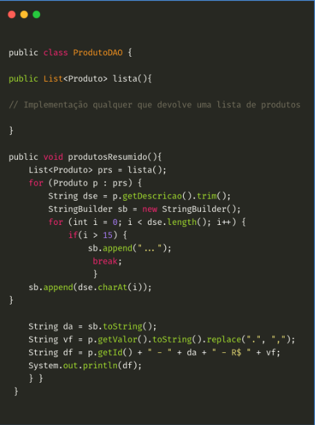

Java (1996)
Java é uma linguagem de programação de propósito geral, orientada a objetos e desenvolvida pela Sun Microsystems na década de 1990. Ela foi projetada para ser uma linguagem portável, ou seja, capaz de ser executada em diferentes sistemas operacionais sem a necessidade de grandes modificações.
Uma das principais características do Java é sua capacidade de executar em uma máquina virtual, conhecida como JVM (Java Virtual Machine). Isso significa que os programas escritos em Java são compilados para um formato intermediário chamado bytecode.

É uma linguagem de programação versátil, portável e orientada a objetos, amplamente utilizada em uma variedade de domínios. Sua capacidade de executar em uma máquina virtual, sua sintaxe legível e sua ênfase em segurança e robustez a tornam uma escolha popular para o desenvolvimento de aplicativos de grande escala, sistemas corporativos e aplicativos móveis.
Atividade desenvolvida como extensão no projeto
PACEX/Mundo Tech do curso de análise e Desenvolvimento de Sistemas
Unipar - Cascavel